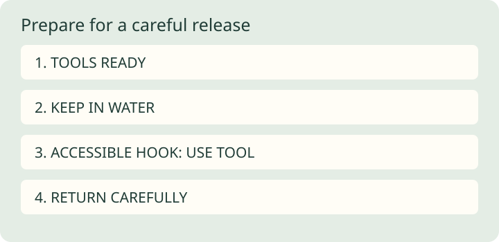

Release with care: prepare tools before the bite
Release starts with preparation. Reducing handling is easier when tools and decisions are ready before the fish arrives.
Prepare an exit
Check the rules for the water and species before fishing, including whether release is required or appropriate. Have suitable pliers or a dehooking tool and an appropriate net within reach. Match tackle strength to the fish to avoid a prolonged struggle. Where permitted and suitable, a single barbless hook can make removal less injurious.
Keep the fish in water
Bring the fish under control with minimal handling. Wet hands before contact and support the fish rather than squeezing it or touching gills. Whenever possible, remove the hook while the fish remains in the water. Keep any necessary handling and air exposure brief; skip a photo if it adds delay.
Remove the hook thoughtfully
Use the prepared tool for an accessible hook. Do not force out a deeply embedded hook; consult the applicable agency guidance on cutting the line instead. Return the fish carefully to the water where caught, subject to local rules. Do not prescribe dragging a fish back and forth as a universal recovery method; species and water conditions matter.
Limits
Release does not guarantee survival. Avoid fishing when water conditions are stressful for fish, and follow local restrictions. NOAA offers broad handling principles in a marine context; NPS supplies freshwater-relevant guidance. Neither replaces local species advice. This page is not instruction for handling dangerous fish or deep-water pressure injuries.

Production and sources
AI-assisted writing and original SVG production. Sources were checked during local preparation. This is general educational material, not personalized instruction or a report of a fishing trip.